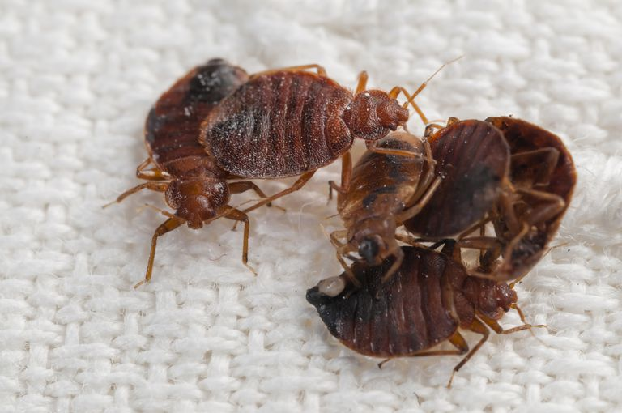
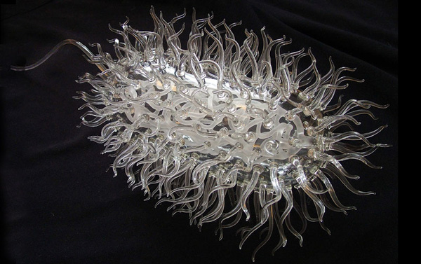

TÁC HẠI ĐÁNG SỢ CỦA CHĂN GA GỐI NỆM BẨN!
Trung bình, một người dành ra 8 tiếng một ngày, 56 tiếng một tuần, 240 tiếng một tháng và 32.120 tiếng một năm cho giấc ngủ. Nghĩa là ⅓ cuộc đời sẽ gắn với chiếc giường của họ.
Chính vì thế, một thói quen rất cần thiết cho cuộc sống chính là: GIẶT CHĂN GA MỖI TUẦN VÀ GIẶT NỆM MỖI THÁNG.
Khu vực giường ngủ có thể ẩn chứa những tác hại tiềm ẩn mà chúng ta không ngờ đến. Cùng Artviet Decor tìm hiểu những sát thủ vô hình này và cách phòng tránh chúng nhé!
30 năm tuổi cũng là dịp để Sapy tri ân tới các Quý đối tác, khách hàng đã và đang luôn đồng hành hợp tác cùng nhau phát triển. Trên hành trình phát triển của mình Sapy rất mong nhận được sự hợp tác, giúp đỡ của quý khách trong thời gian tới.
Chính vì thế, một thói quen rất cần thiết cho cuộc sống chính là: GIẶT CHĂN GA MỖI TUẦN VÀ GIẶT NỆM MỖI THÁNG.
Khu vực giường ngủ có thể ẩn chứa những tác hại tiềm ẩn mà chúng ta không ngờ đến. Cùng Artviet Decor tìm hiểu những sát thủ vô hình này và cách phòng tránh chúng nhé!
30 năm tuổi cũng là dịp để Sapy tri ân tới các Quý đối tác, khách hàng đã và đang luôn đồng hành hợp tác cùng nhau phát triển. Trên hành trình phát triển của mình Sapy rất mong nhận được sự hợp tác, giúp đỡ của quý khách trong thời gian tới.
Giường ngủ ẩn chứa những nguy cơ gì?
Tiến sĩ Philip Tierno, giám đốc chuyên khoa về vi sinh học lâm sàng và miễn dịch tại Trung tâm Y tế Langone, Đại học New York, chia sẻ giường ngủ có thể là nơi tích tụ các mảng da chết, mồ hôi, từ đó sản sinh ra vi khuẩn, nấm và ve, chỉ sau một đêm nằm ngủ. Những tạp chất này tích tụ lâu dài sẽ tạo nên những phản ứng không mong muốn cho cơ thể và sức khỏe con người.
Cụ thể, trung bình, chiếc giường ngủ có thể chứa đến 100.000 - 10 triệu con mạt bụi với kích thước siêu nhỏ. Mạt bụi có thói quen đi ngoài tận 20 lần/ ngày, và chất thải của chúng cực kì độc hại cho hệ hô hấp của con người nếu hít phải trong thời gian kéo dài.
Các nhà khoa học phát hiện chăn ga gối nệm có tuổi thọ từ 1,5 đến 20 năm có thể chứa tới 4 - 17 loại nấm khác nhau. Chúng có thể xâm nhập vào phổi và não.
Rệp giường là động vật hút máu và sinh sản nhanh. Những cú cắn của rệp đa phần đều chỉ gây ngứa ngáy, khó chịu nhưng lại lên đến 500 lần/ đêm. Chúng cũng có thể sống một năm mà không cần hút máu và sinh sản đến ba lần/ tháng, mỗi lứa chứa hàng trăm trứng có kích thước bằng hạt bụi. Rệp giường cũng lan dễ dàng và nhanh chóng qua nhà hàng xóm mà không ai ngờ đến.
Một số chủng nguy hiểm của vi khuẩn E.coli có thể xuất hiện trên giường ngủ. Chúng thường xâm nhập cơ thể làm yếu hệ miễn dịch, và tiếp tục di chuyển đến khu vực não và thận.
Ngoài ra, còn nhiều loại vi sinh vật khác hiện hữu quanh giường ngủ. Chính vì thế, tiến sĩ Lisa Ackerley, chuyên gia về vệ sinh gia đình ở Mỹ, tiết lộ việc không vệ sinh chăn ga nệm thường xuyên có thể đặt người dùng vào nguy cơ nhiễm virus và nhiễm trùng vô cùng nghiêm trọng.
Cụ thể, trung bình, chiếc giường ngủ có thể chứa đến 100.000 - 10 triệu con mạt bụi với kích thước siêu nhỏ. Mạt bụi có thói quen đi ngoài tận 20 lần/ ngày, và chất thải của chúng cực kì độc hại cho hệ hô hấp của con người nếu hít phải trong thời gian kéo dài.
Các nhà khoa học phát hiện chăn ga gối nệm có tuổi thọ từ 1,5 đến 20 năm có thể chứa tới 4 - 17 loại nấm khác nhau. Chúng có thể xâm nhập vào phổi và não.
Rệp giường là động vật hút máu và sinh sản nhanh. Những cú cắn của rệp đa phần đều chỉ gây ngứa ngáy, khó chịu nhưng lại lên đến 500 lần/ đêm. Chúng cũng có thể sống một năm mà không cần hút máu và sinh sản đến ba lần/ tháng, mỗi lứa chứa hàng trăm trứng có kích thước bằng hạt bụi. Rệp giường cũng lan dễ dàng và nhanh chóng qua nhà hàng xóm mà không ai ngờ đến.

Một số chủng nguy hiểm của vi khuẩn E.coli có thể xuất hiện trên giường ngủ. Chúng thường xâm nhập cơ thể làm yếu hệ miễn dịch, và tiếp tục di chuyển đến khu vực não và thận.

Ngoài ra, còn nhiều loại vi sinh vật khác hiện hữu quanh giường ngủ. Chính vì thế, tiến sĩ Lisa Ackerley, chuyên gia về vệ sinh gia đình ở Mỹ, tiết lộ việc không vệ sinh chăn ga nệm thường xuyên có thể đặt người dùng vào nguy cơ nhiễm virus và nhiễm trùng vô cùng nghiêm trọng.
Mất ngủ trở nên “thân thuộc”
Biểu hiện đầu tiên nhận thấy được khi nằm trên một tấm nệm bẩn chính là cảm giác ngứa ngáy toàn thân. Có thể trong thời gian đầu, bạn sẽ nghi ngờ triệu chứng dị ứng này là do thức ăn, hoặc thuốc uống, hoặc đồ dưỡng da bạn đang dùng? Nhưng rất ít ai chuyển hướng đến chính chiếc giường mình sử dụng hàng ngày.
Nếu quần áo được “chăm sóc” kĩ lưỡng sau một ngày sử dụng, tại sao chăn ga gối nệm lại không được tận tình như thế? Các lớp bụi bẩn bám vào da khiến làn da chúng ta không ngừng “biểu tình” hàng ngày, dẫn đến những triệu chứng như trằn trọc, mộng mị, và khó ngủ.
Mất ngủ còn để lại hàng nghìn hậu quả khác, bao gồm tâm trạng nặng nề, khó chịu, gương mặt trở nên phờ phạc, hốc hác, và làn da tái sạm, thiếu sức sống. Giấc ngủ cũng đóng vai trò hết sức quan trọng đối với sức khỏe của não bộ. Hiện trạng mất ngủ kéo dài sẽ tạo mối nguy hiểm đến thể trạng của bạn trong tương lai.
Nếu quần áo được “chăm sóc” kĩ lưỡng sau một ngày sử dụng, tại sao chăn ga gối nệm lại không được tận tình như thế? Các lớp bụi bẩn bám vào da khiến làn da chúng ta không ngừng “biểu tình” hàng ngày, dẫn đến những triệu chứng như trằn trọc, mộng mị, và khó ngủ.
Mất ngủ còn để lại hàng nghìn hậu quả khác, bao gồm tâm trạng nặng nề, khó chịu, gương mặt trở nên phờ phạc, hốc hác, và làn da tái sạm, thiếu sức sống. Giấc ngủ cũng đóng vai trò hết sức quan trọng đối với sức khỏe của não bộ. Hiện trạng mất ngủ kéo dài sẽ tạo mối nguy hiểm đến thể trạng của bạn trong tương lai.
Nguy cơ tiềm ẩn: hen suyễn, viêm mũi
Các mạt bụi từ chăn ga gối nệm dễ dàng theo đường hô hấp len lỏi vào cơ thể con người. Phổi buộc phải tiếp nhận một lượng lớn “thực phẩm” ô nhiễm chứa đầy những nguy cơ gây các bệnh như hen suyễn, viêm mũi dị ứng, viêm khí quản, viêm hô hấp mãn tính, viêm phổi .
Khi ra đường, chúng ta đều tâm niệm phải trang bị đầy đủ khẩu trang để chống bụi, nhưng chúng ta lại quên mất ngay trong chính căn nhà của mình, địa bàn tưởng chừng như rất thân thuộc, cũng ẩn chứa những sinh vật “mắt không thấy, tai không nghe” đáng sợ đó. Dù vậy, cũng không thể 24/24 kề bên chiếc khẩu trang phải không nào?
Đã bao lâu rồi bạn chưa vệ sinh nệm? Nếu đã quá hạn và quá bận rộn thì hãy để Home Care của Artviet Decor chăm sóc tổ ấm cùng bạn nhé.
Khi ra đường, chúng ta đều tâm niệm phải trang bị đầy đủ khẩu trang để chống bụi, nhưng chúng ta lại quên mất ngay trong chính căn nhà của mình, địa bàn tưởng chừng như rất thân thuộc, cũng ẩn chứa những sinh vật “mắt không thấy, tai không nghe” đáng sợ đó. Dù vậy, cũng không thể 24/24 kề bên chiếc khẩu trang phải không nào?
Đã bao lâu rồi bạn chưa vệ sinh nệm? Nếu đã quá hạn và quá bận rộn thì hãy để Home Care của Artviet Decor chăm sóc tổ ấm cùng bạn nhé.
Các bệnh về da ùn ùn kéo đến
Khi ngủ, nước bọt, mồ hôi, các tế bào da chính là nguồn dinh dưỡng lý tưởng cho các loại vi khuẩn và nấm trên chăn ga gối nệm sinh sôi nảy nở. Da cơ thể tiếp xúc trực tiếp với môi trường này trong thời gian dài sẽ bị tổn hại và hình thành các triệu chứng bệnh rất nghiêm trọng như nổi đốm đỏ, rôm sảy, mụn trứng cá, mụn cám, chàm, nhiễm trùng vết thương, lở loét da, thiếu sắt nghiêm trọng,... và còn có nguy cơ nhiễm những căn bệnh qua đường máu như dịch hạch, sốt phát ban, sốt hồi quy, tularemia, sốt Q, viêm gan B.
Khi xuất hiện những biểu hiện tương tự, đừng nghĩ do thuốc điều trị chưa tốt hay bác sĩ chưa hay. Hãy chuyển hướng đến những vật dụng luôn kề cạnh bạn quanh nhà, đặc biệt là chiếc nệm, chăn, gối bạn sử dụng mỗi ngày. Chúng có thể chính là kẻ thù bạn không ngờ đến nhất.
Đã bao lâu rồi bạn chưa vệ sinh nệm? Nếu đã quá hạn và quá bận rộn thì hãy để Home Care của Artviet Decor chăm sóc tổ ấm cùng bạn nhé.
Khi xuất hiện những biểu hiện tương tự, đừng nghĩ do thuốc điều trị chưa tốt hay bác sĩ chưa hay. Hãy chuyển hướng đến những vật dụng luôn kề cạnh bạn quanh nhà, đặc biệt là chiếc nệm, chăn, gối bạn sử dụng mỗi ngày. Chúng có thể chính là kẻ thù bạn không ngờ đến nhất.
Đã bao lâu rồi bạn chưa vệ sinh nệm? Nếu đã quá hạn và quá bận rộn thì hãy để Home Care của Artviet Decor chăm sóc tổ ấm cùng bạn nhé.
Ảnh hưởng cột sống
Nệm quá cũ, không được vệ sinh và bảo quản đúng cách cũng là nguyên nhân dẫn đến ảnh hưởng không tốt cho cột sống, nhất là đối với người bị đau lưng và thoát vị đĩa đệm. Qua một thời gian, các sợi vải dễ dàng bị mục, hoặc các vi sinh vật ăn mòn cấu trúc nệm sẽ dẫn đến việc nệm bị trũng xuống, mất độ đàn hồi, khiến cho máu không tuần hoàn tốt, lưng không được cố định đúng từ đó gây ê ẩm người và tác động đến tư thế nằm con người.
Cách phòng ngừa những nguy cơ tiềm ẩn nói trên
Việc giặt chăn ga gối nệm định kì là hết sức quan trọng. Có thể nói, chiếc giường ngủ dù là chốn yên bình cho một ngày mệt mỏi, nhưng cũng là ổ vi khuẩn ít ai ngờ đến. Cho dù được bảo vệ bởi một tấm drap giường, mồ hôi vẫn dễ dàng thấm hút vào trong nệm, và chúng ta, những người trực tiếp tiếp xúc với chúng, lại chẳng mảy may hay biết.
Chính vì thế, Giặt là Bắc Giang khuyên các bạn:
Nhưng nếu không có thời gian thì sao? Giặt là Bắc Giang đã có DỊCH VỤ HOME CARE cho bạn!
Không chỉ chú trọng vệ sinh chiếc nệm êm ấm của bạn từ A đến Z, gói dịch vụ Home Care còn bao gồm giặt rèm và sofa cho bạn, giúp căn nhà trở nên sạch sẽ, gọn gàng, khiến buổi sinh hoạt gia đình trở nên ấm cúng hơn.
Chính vì thế, Giặt là Bắc Giang khuyên các bạn:
- 1.Chọn mua nhiều loại chăn ga bao gối để thay thế khi cần.
- 2.Áp dụng chế độ giặt chăn ga mỗi tuần và nệm mỗi tháng để giảm thiểu tác hại đến sức khỏe.
- 3.Chú ý hạn sử dụng của chăn ga gối nệm và thay sản phẩm mới ngay khi đến hạn, cụ thể là 5-10 năm cho nệm, 1-2 năm cho gối, 1 năm cho drap giường & bao gối và 15-25 năm cho chăn.
- 4.Làm thoáng khí phòng ngủ, mở cửa sổ để nắng hắt vào và không kê quá nhiều đồ đạc.
- 5.Hút bụi và lau dọn sạch sẽ cũng là một giải pháp phù hợp.
Nhưng nếu không có thời gian thì sao? Giặt là Bắc Giang đã có DỊCH VỤ HOME CARE cho bạn!
Không chỉ chú trọng vệ sinh chiếc nệm êm ấm của bạn từ A đến Z, gói dịch vụ Home Care còn bao gồm giặt rèm và sofa cho bạn, giúp căn nhà trở nên sạch sẽ, gọn gàng, khiến buổi sinh hoạt gia đình trở nên ấm cúng hơn.